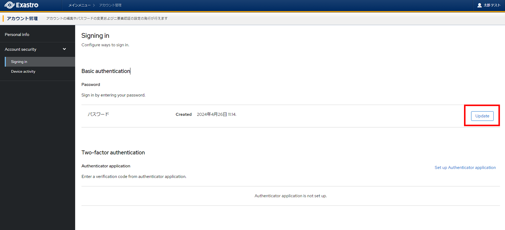
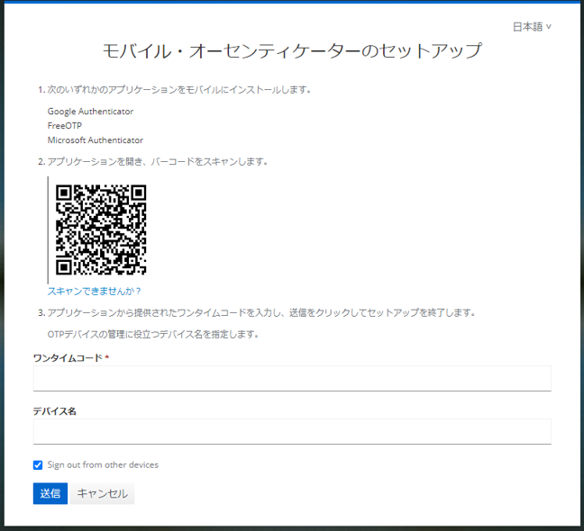
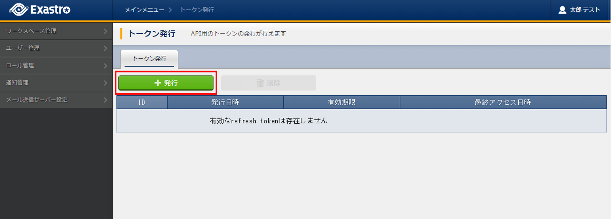
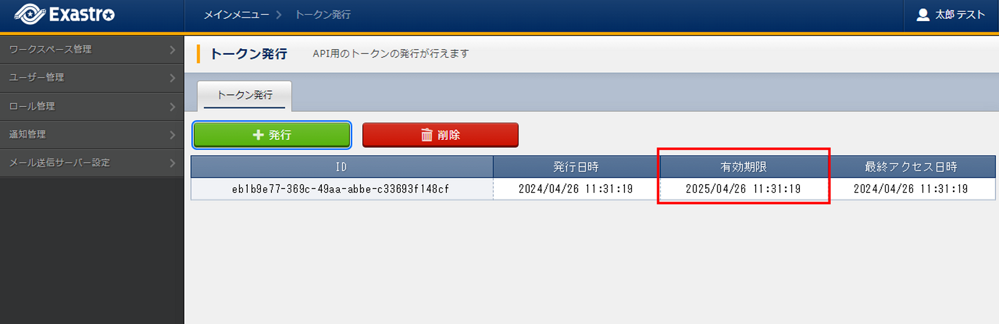

アカウント管理¶
アカウント管理では、自身のアカウント編集、パスワード変更、二要素認証設定、トークン発行ができます。
- アカウント管理はログインユーザーのアイコンを選択して表示されるメニューから アカウント管理 を選択することにより設定できます。
注釈
Exastro IT Automation利用中は、メニュー - アカウント管理 は表示されません
{kind=link}
アカウント編集¶
{kind=link}
パスワード変更¶
- [Account security] > [Signing in] > [Basic authentication]より、Update を押下します。
 - 自身のパスワードを変更することができます。
{kind=link}
{kind=link}
二要素認証設定¶
- [Account security] > [Signing in] > [Two-factor authentication]より、:guilabel:` Set up Authenticator application` を押下します。
- パスワードを入力してログイン後、二要素認証の設定を行うことができます。

{kind=link}
{kind=link}
{kind=link}
トークン発行¶
本システムにおいて、APIを呼び出すにはアクセストークンが必要です。アクセストークンの発行には、本説明で扱うリフレッシュトークンが必要となります。
- ログインユーザーのアイコンを選択して表示されるメニューから を選択することにより、API実行に必要なトークンの発行ならびに発行したトークンの一覧表示を行うことができます。
- 初めてトークンを発行する際は、発行 ボタンを押下して、必要な情報を入力しトークンを発行することができます。二要素認証を使用している場合は、二要素認証で使用しているアプリケーションのワンタイムパスワードを入力する必要があります。
 - 発行されたトークンは、再表示できませんので必ず発行結果の画面のトークンを保存する必要があります。

- 発行したトークンの有効期限は、トークン一覧で確認できます。
 - 発行したトークンが不要となった際は、削除 ボタンを押下して、トークンを削除することができます。
 削除確認で本当に削除する場合は、yes を入力して、はい、削除します ボタンを押下します。
削除確認で本当に削除する場合は、yes を入力して、はい、削除します ボタンを押下します。
警告
削除した際、すべてのトークンが無効となります。
{kind=link}
{kind=link}
{kind=link}
{kind=link}